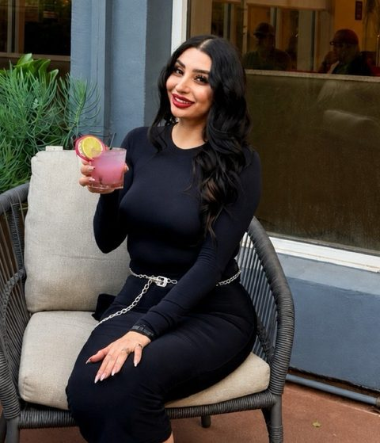
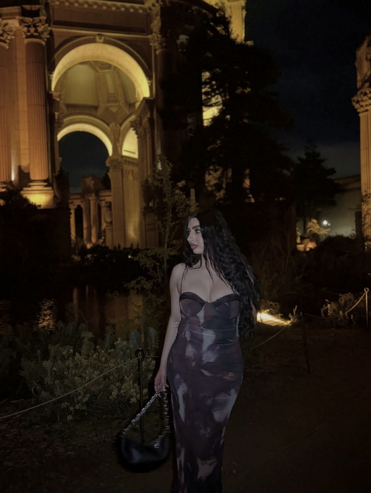

Hotel stay · Stills + Reel
Hilton
A slow, poolside hotel-stay story — arrival, patio drinks and the in-between moments that make a stay feel like an escape.
Brand Work
San Francisco model and lifestyle creator — hotel, dining and product content filmed like an evening out.
Maria Marron is a model, actress and creative director based in San Francisco. She has appeared in hotel and dining shoots with Crenshaw Visuals for Hilton, Omni and Fogão Gaúcho, and creates her own glam, lifestyle and UGC-style content for brands.
Hotel & dining · with Crenshaw Visuals
On-camera talent for hotel and restaurant content produced by Crenshaw Visuals.

Hotel stay · Stills + Reel
A slow, poolside hotel-stay story — arrival, patio drinks and the in-between moments that make a stay feel like an escape.
Hotel content · on camera
Hotel content with Crenshaw Visuals — Maria on camera for the stay, the spaces and the city around it. Imagery available on request.
Dining · Stills + Reels
A night-out dining feature — the wine wall, the table and the moment you reach for your phone to capture it.
What I make
Polished, editorial photography — looks, locations and San Francisco nights.
Vertical, cinematic short-form built for Instagram and TikTok.
Beauty, hair and jewelry woven into a night-out routine, start to finish.
Your product in a beautiful room — skincare on the vanity, the bag on the bed, the drink on the patio.
Atmosphere, signature dishes and the feeling of the night.
Natural, first-person product videos for your own ads, site and channels.
UGC samples
New spec UGC videos are being filmed now and will be posted here as they’re finished. Want one built around your product? Ask below.

Skin prep to night-out glam, featuring beauty, hair and jewelry partners.
A polished, honest first look at a product — filmed to run as an ad.
Skincare on the vanity, the bag on the bed — your product in a beautiful room.
Beauty · fashion · jewelry · lifestyle · dining
Send your brand, product and idea — every inquiry is read personally.
mariamarronbusiness@gmail.com · San Francisco, California